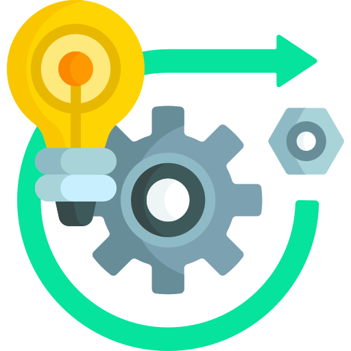
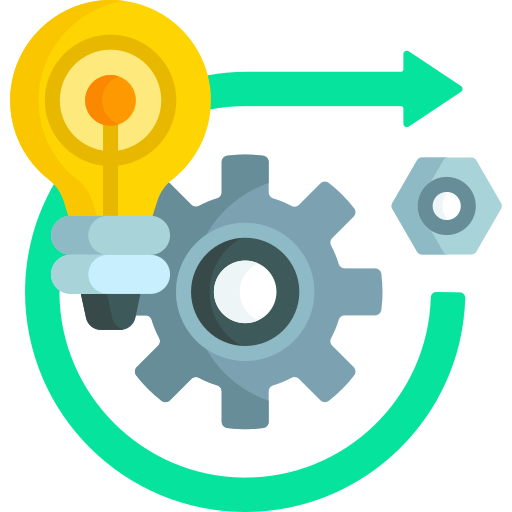
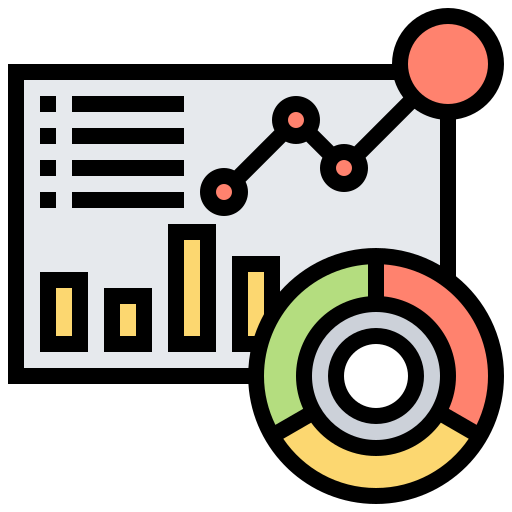

HCL Muscat Technologies LLC │Oman │ December 2016 to January 2020
HCL Technologies helps global enterprises reimagine their businesses for the digital age. Through innovative technology solutions built around Digital, IoT, Cloud, Automation, Cybersecurity, Analytics,
Infrastructure Management and Engineering
Services, amongst others, HCL solves complex business problems for its clients.
Associate General Manager
Last Assignment: From Feb, 2019
Reported to: Operations Director
Served as the Program Manager for a very large, multinational financial investment company based out of Dubai (UAE)
Implementing a design thinking approach for the ground-up development for a FinTech platform for B2B and B2C which includes phases from ideation to BPR to Prototype development, core and front-end deployment, roll-out and integration.
Technologies include SAP, Hybrid and Native Mobile tech, SAG webMethods and Magento e-Commerce
.png) Approx Value of the Program: USD.22 Million, Team Size: 40
Approx Value of the Program: USD.22 Million, Team Size: 40
Previous Assignment: Dec, 2016 to Jan, 2019
Reported to: Associate Vice President
Served as the Head of Centre of Excellence (CoE), SAS for Mobile Applications Development, Information Technology Authority (ITA), Oman, Single Point of Contact, interacting with ITA program owner and HCL stakeholders. Responsible for steering
& overseeing the functioning of the CoE.
Project value: USD.6.2 Million, On-Site Team Size: 15
Responsibilities
- Work in tandem with ITA program owner to ensure alignment of CoE to the overall objectives and track, review & ensure the progress and quality of the services delivered
- Establish governance & best practices, assess risk and lead CoE business development effort to achieve the project objectives
- Plan, organise and adopt necessary changes to the CoE program ensuring smooth delivery of agreed project deliverables
- Interact as a SPOC with external clients & ITA stakeholders on matters related to the functioning of CoE
 Key Action Points
Key Action Points
- Ensure HCL overcome the challenges related to the execution of contractual obligations, complies with and delivers enhanced value to ITA under the agreed contractual statement of work.
- Ensure ITA is billed on time, minimise costs and revenue recognition and profitability is in alignment with HCL project budgets
- Review and take necessary action steps to ensure forecasts and actuals are consistent and accurate
- Understand what ITA and its management want to achieve in general and specifically from the perspective of the contract between ITA and HCL. Accordingly align SAS for Mobile Apps Development (SAMOB) deliverables, objectives & values
- Analyse the needs (ITA & CoE), the conditions, constraints, options and market factors that exist in order to set and achieve CoE objectives and benefits within the gamut of agreed contract scope.
- Wear different hats in leading the effort and the team - thinking, planning, building, running, monitoring and controlling of various CoE enablers - structure, guidelines, processes, procedures, projects, initiatives, people/ teams,
systems,
culture, practices, etc., and executing the operational tactics.
- Plan the required strategy to achieve what CoE wants, set the goals & measurements, decide on priorities & important matters and plan how to optimize resources, costs & risks
- Realise the interdependencies between various CoE functions and enablers and articulate ITA & CoE goals and needs down to CoE functions and enablers (to operations) in terms of deliverables, tasks and activities
- Set direction to team through prioritization and decision making and by optimizing resources output and risks at global level as well as individual function or client project level
- Guide, mentor and govern the effort and focus to achieve the set objectives and project deliverables, thus realize value and benefits for trainees, CoE project, ITA, Trainees and other entities
- Undertake and implement initiatives, projects, changes, continuous learning, improvement & development and promote innovation and initiation
- Regularly interact and report on CoE progress, benefits achieved, risks, challenges to ITA, recommend actions and seek advice, decisions and remedial measures
Highlights
- Introduced the concept of revenue generation within ITA (a govt organisation) and 125K USD revenue has been generated through fast-track training and mobile apps development. The market equivalent of the revenue generated would be at least
1
Million USD
- Ensured the delivery of all agreed project and contract deliverables in time, on par with the best of industry standards
- Played a vital role in negotiating to bring down payment deductions/ penalties by a 0.5 Million USD
- Ensured CoE provided the value it is expected to provide Omani trainees, thus achieved the coveted rating as the best training programs provided by ITA to the public
- Nearly 1200 students were trained in Mobile App Development Technologies through Extensive classroom based technical trainings and also by providing intensive fast-track and on-demand training
- More than 150 ideas from students were taken for Mobile app development in Native and Hybrid technologies of which nearly 60 Apps went live into Google Play Stores/ Apple Stores
- Helped 30+ trainees got employed either in a full-time job or as freelancer
- 70+ students were mentored and groomed in skills related to ideation, app development, business planning & entrepreneurship and employment needs
- Guided and mentored trainees to generate, evaluate and select best ideas and work on the non-technical aspects as business modelling, planning, networking, marketing etc., to convert the ideas into sustainable business platforms.
- Enabled student alumni to undertake fast track trainings outside ITA CoE as freelance trainers.
- Introduced concepts like Idea Presentation, Proof of Concept competition and Wall of Fame to encourage the entire process right from idea generation to converting idea into mobile apps and deployment of apps in stores.
- Continuously encouraged and enabled team to upgrade themselves to align the services delivered, particularly the training services with Industry trends.
- Private sector is engaged to be part of the CoE support system such as mentorship, financing, knowledge & expertise share, etc.; key MoUs are signed as part of eco system development
- Encouraged the team to mentor, participate, conduct and evaluate technology hackathons such Microsoft Imagine cup, Comex, SAS48, Client lead Workshops etc.,